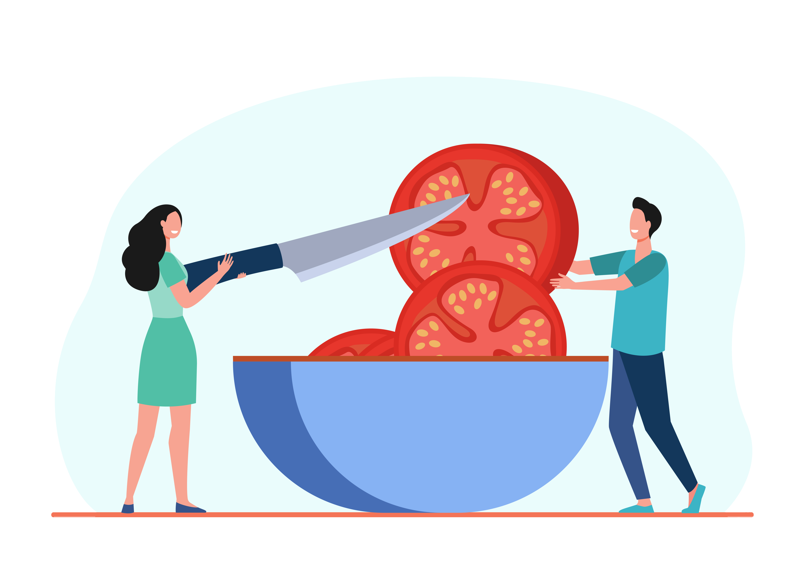

The Pomodoro Technique is a time management method based on 25-minute stretches of focused work broken by five-minute breaks. Longer breaks, typically 15 to 30 minutes, are taken after four consecutive work intervals. Each work interval is called a pomodoro, the Italian word for tomato (plural: pomodori).
